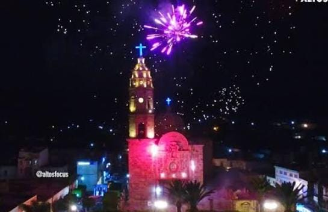
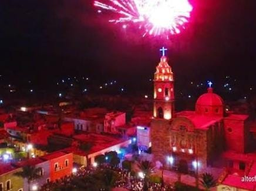
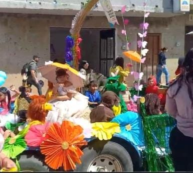
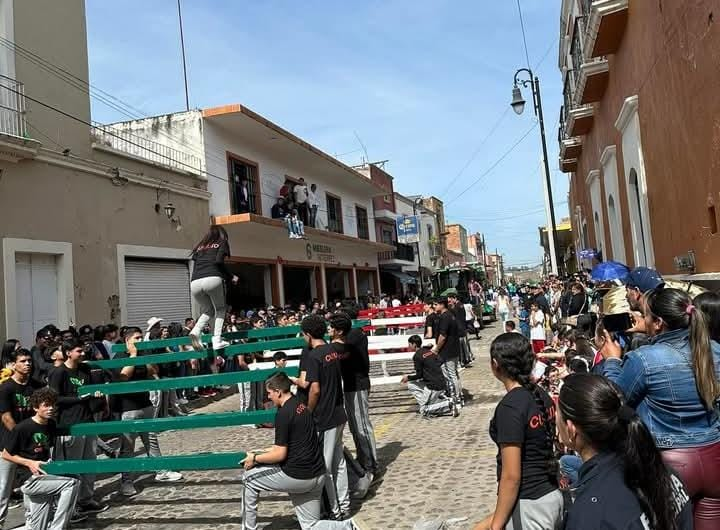
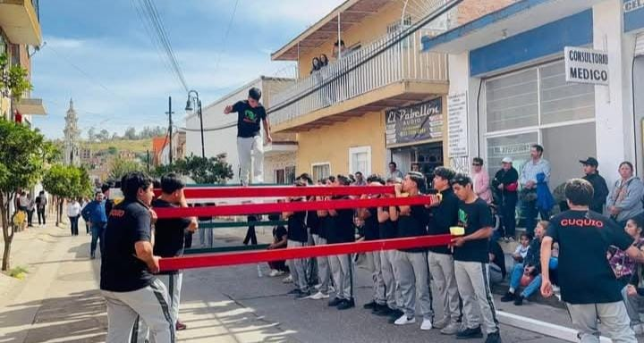
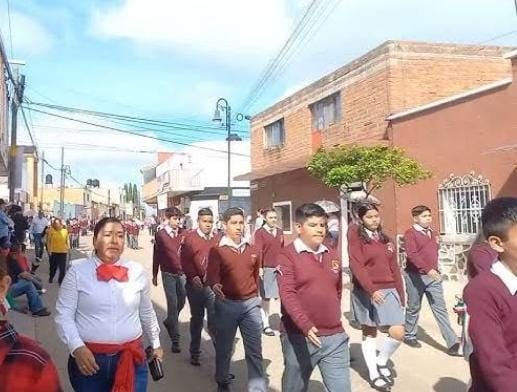
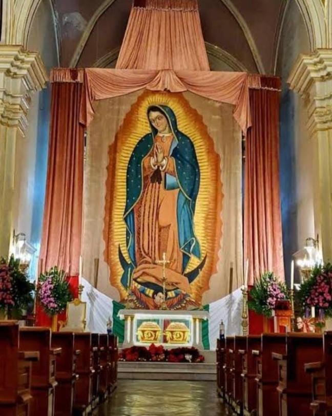
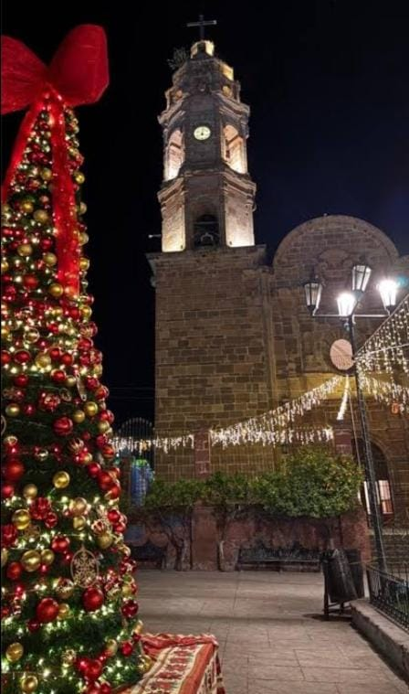
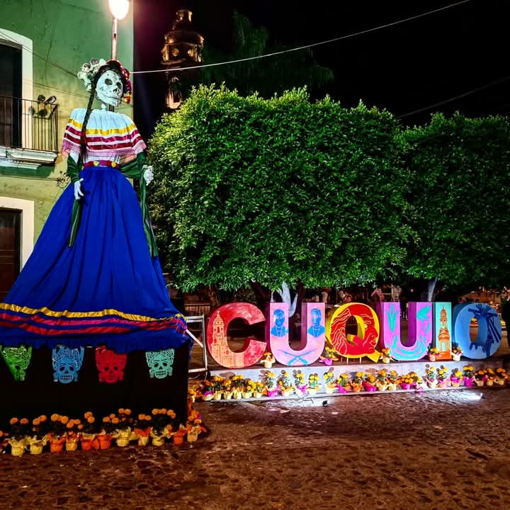

Las fiestas de mayo comienzan en 1 de mayo y se terminan el 10 de mayo,todos estos días se hacen festejos donde hay puestos de juguetes y juegos mecánicos,también en esos días de festividad traen grupos a cantar y el día 10 de mayo traen a un grupo o cantante especial ya que es el cierre de las fiestas,también el último día hacen regalos a las madres por el 10 de mayo y actividades.

En el municipio de de cuquio se celebran varias fiestas en honor a el santo que representa a a cada pueblo.Cada rancho tienen una fecha especifica pero pero inician 9 dias antes, en algunos ranchos al terminar el novenario la fientas siguen uno o dos dias despues , a esto se le llama fiesta patronal. La fiesta mas cocida es la de Cuquio qu inicia el 1 dde mayo y termina el 10 de mayo.Es tas fiestas son un gran atracctivo, donde se promueve la religion haciendo misas durante todo el novenario, y las peregrinaciones con el señor de Teponahuasco y otros santos mas como la virgen de la cucharita etc. Las fiestas no son solo un es religion si no tambien es un gran tiempo de diversion ya que en este tiempo llegan diferetes juegos mecanicos donde te puede divertir.s

Hacen desfile los niños de primarias y kinder vestidos de un personaje representando la primavera.

Desfilan las preparatorias,secundarias, kinder,primarias y hacen tabla rítmica,y pirámides en honor a la revolución mexicana.


16 de septiembre: independencia de México donde marchan todos los estudiantes en representación a su escuela.

12 diciembre, día de la virgen de Guadalupe comienzan con las mañanitas y todos los días se reza desde el 4 hasta el 12,y el 12 se hace misa y se llevan flores a la virgen.

Empiezan las posadas en el templo principal de cuquio duran 9 días y esos días se reza en el templo y al final regalan juguetes o comida el día 24 rezan y hacen misa por la navidad y en la noche reparten juguetes.

preparatorias,secundarias,y primarias de Cuquio Jalisco hacen altares en la plaza principal de cuquio donde en cada altar se agrega una imagen de una persona que ya falleció para hacen omenaje en honor a esa persona.
